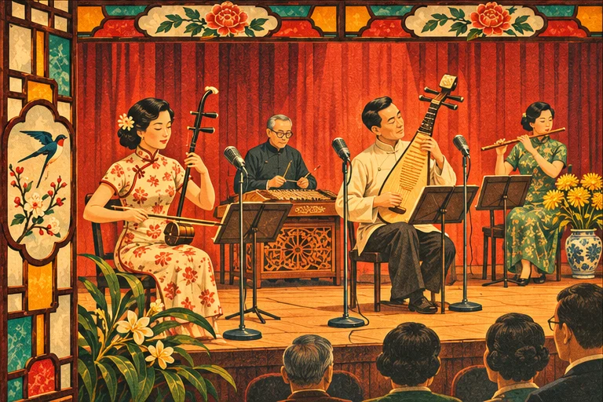

粤韵南洋 · 慈善同行
在悉尼市政厅，社区公益与粤语音乐共用一个舞台。白天的健康讲座向乡亲介绍失智症知识；晚间的「致敬经典」群星慈善演唱会由汤宝如、廖百威领衔演出。
1688 澳洲新闻网／澳洲日报 · 11 月 6 日市政厅活动会后报道
主办方会前介绍把这组活动作为 2027 悉尼世广会的社区预热。11 月 6 日当天，讲座、赛事和晚间音乐会分别面向关心长者照护、参与粤语文化和支持公益的观众。

粤唱粤强 · 南太平洋赛区
赛区于 6 月启动，设青少年、成年和乐龄组，悉尼、墨尔本、南澳和西澳分别组织分赛。11 月 6 日，南太平洋赛区总决赛在悉尼市政厅举行。
1688 澳洲新闻网／澳洲日报 · 11 月 6 日市政厅活动会后报道
2CR 澳洲中文广播电台 · 6 月 13 日悉尼筹备发布会图文
赛前发布会介绍，赛事为不同年龄层提供演绎粤语歌曲的舞台，并计划由优胜者代表南太平洋赛区赴广州参加全球总决赛。
2CR 澳洲中文广播电台 · 6 月 13 日悉尼筹备发布会图文 · 2CR 澳洲中文广播电台 · 9 月 12 日系列活动发布会图文
「粤韵南洋 · 慈善同行」发布会
发布会在悉尼唐人街东莞同乡会公义堂会馆举行，介绍了粤语歌唱比赛、公益讲座和慈善演唱会，并公布三项活动将在 11 月 6 日于悉尼市政厅举行。系列活动以粤语文化连接社区，也让更多人关注失智长者及照护家庭。
2CR 澳洲中文广播电台 · 9 月 12 日系列活动发布会图文 · 2CR 澳洲中文广播电台 · 9 月 12 日系列活动发布会图文
悉尼筹备新闻发布会
澳洲各州侨团代表在悉尼参加新闻发布会。会上公布了第六届大会的举办城市和月份，也介绍了「粤唱粤强」在澳洲的赛区安排。
6 月发布会同时宣布成立总会青年部与商务部，并启动第二届「粤唱粤强」南太平洋赛区。9 月的发布会进一步介绍了市政厅系列活动。
韶关交旗 · 悉尼接棒
第五届大会回到南雄珠玑古巷。开幕活动除了乡亲联谊，还包括韶关投资环境推介。会旗交接仪式把大会的下一站连到了澳大利亚。
十周年中秋晚会
2024 年 9 月 9 日 · 悉尼
得胜堂醒狮团以锣鼓和醒狮开场。陈桦与弘妃演唱《帝女花》，其他社团带来拳术、粤语歌曲和锣鼓表演。台上是熟悉的乡音，台下是一起走过十年的社团和乡亲。
活动相册与现场报道
从原报道可查看发布会合照、会旗交接及悉尼市政厅活动的现场记录。
2CK Media · 6 月悉尼筹备发布会图文 · 2CR 澳洲中文广播电台 · 9 月 12 日系列活动发布会图文 · 1688 澳洲新闻网／澳洲日报 · 11 月 6 日市政厅活动会后报道 · 广东省侨办 · 韶关大会开幕与会旗交接（网页存档）